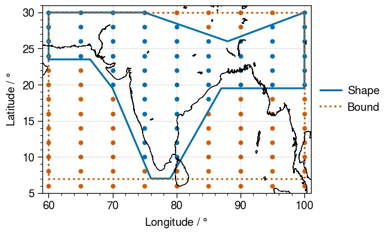

From GeoRegions to RegionGrid
But how do we go from defining a GeoRegion, to extracting data for that GeoRegion? The answer is with the information in the RegionGrid types, which maps gridded lon-lat data to a given GeoRegion
- Mapping gridded lon-lat data to a
RectRegiongives aRectGridstructure - Mapping gridded lon-lat data to a
PolyRegiongives aPolyGridstructure
However, the basic uses of RectGrid and PolyGrid are the same, and as such their differences are largely transparent to the user, except for one field found in PolyGrid, the mask, which will be elaborated upon later.
GeoRegions.RegionGrid — TypeRegionGridAbstract supertype for geographical regions.
GeoRegions.RectGrid — TypeRectGrid{FT<:Real}Structure containing information needed to extract data from a given lon-lat grid for a given RectRegion.
GeoRegions.PolyGrid — TypePolyGrid{FT<:Real}Structure containing information needed to extract data from a given lon-lat grid for a given PolyRegion with numeric elements of type FT. In addition to the information stored by the RectGrid type, it also has a mask that allows for non-rectilinear shape extraction.
RectGrid Example
julia> using GeoRegions
julia> geo = GeoRegion("GF_SSA")
The Rectilinear Region GF_SSA has the following properties:
Region ID (regID) : GF_SSA
Parent ID (parID) : GLB
Name (name) : Southern South America
Bounds (N,S,E,W) : [-20.0, -60.0, 320.0, 280.0]
(is180,is360) : (false, true)
julia> lon = collect(-180:5:180)[1:(end-1)];
julia> lat = collect(-90:5:90);
julia> ginfo = RegionGrid(geo,lon,lat)
The Rectilinear Grid has the following properties:
Grid Bounds (igrid) : [15, 7, 29, 21]
Longitude Indices (ilon) : [21, 22, 23, 24, 25, 26, 27, 28, 29]
Latitude Indices (ilat) : [7, 8, 9, 10, 11, 12, 13, 14, 15]
Longitude Points (glon) : [-80.0, -75.0, -70.0, -65.0, -60.0, -55.0, -50.0, -45.0, -40.0]
Latitude Points (glat) : [-60.0, -55.0, -50.0, -45.0, -40.0, -35.0, -30.0, -25.0, -20.0]
Region Size (nlon * nlat) : 9 lon points x 9 lat pointsGeoRegions.RegionGrid — MethodRegionGrid(
geo :: RectRegion{ST,FT},
lon :: Vector{<:Real},
lat :: Vector{<:Real}
) -> RectGrid{FT}Creates a rectilinear GeoRegion RegID.
Arguments
geo: A RectRegion struct typelon: A vector containing the longitude pointslat: A vector containing the latitude points
PolyGrid Example
julia> using GeoRegions
julia> geo = GeoRegion("AR6_NWS")
The Polygonal Region AR6_NWS has the following properties:
Region ID (regID) : AR6_NWS
Parent ID (parID) : GLB
Name (name) : Northwest South America
Bounds (N,S,E,W) : [12.0, -15.0, -72.0, -83.4]
Shape (shape) : Point2{Float64}[[-75.0, 12.0], [-83.4, 2.2], [-83.4, -10.0], [-79.0, -15.0], [-72.0, -15.0], [-72.0, 12.0], [-75.0, 12.0]]
(is180,is360) : (true, false)
julia> lon = collect(-180:5:180)[1:(end-1)];
julia> lat = collect(-90:5:90);
julia> ginfo = RegionGrid(geo,lon,lat)
The Polygonal Grid has the following properties:
Grid Bounds (igrid) : [21, 16, 23, 20]
Longitude Indices (ilon) : [20, 21, 22, 23]
Latitude Indices (ilat) : [16, 17, 18, 19, 20, 21]
Longitude Points (glon) : [-85.0, -80.0, -75.0, -70.0]
Latitude Points (glat) : [-15.0, -10.0, -5.0, 0.0, 5.0, 10.0]
Region Size (nlon * nlat) : 4 lon points x 6 lat points
Region Mask (sum(mask) / (nlon * nlat)) : 10 / 24GeoRegions.RegionGrid — MethodRegionGrid(
geo :: PolyRegion{ST,FT},
lon :: Vector{<:Real},
lat :: Vector{<:Real}
) -> PolyGrid{FT}Creates a rectilinear GeoRegion RegID.
Arguments
geo: A PolyRegion struct typelon: A vector containing the longitude pointslat: A vector containing the latitude points
The Mask of a PolyGrid
The PolyGrid type derived from a PolyRegion allows us to apply a mask to filter out data that is within the shape of a PolyRegion on a rectilinear lon-lat grid defined by the bound of a PolyRegion. We consider the following example of an AR6 region over South Asia:
julia> using GeoRegions
julia> geo = GeoRegion("AR6_SAS")
The Polygonal Region AR6_SAS has the following properties:
Region ID (regID) : AR6_SAS
Parent ID (parID) : GLB
Name (name) : South Asia
Bounds (N,S,E,W) : [30.0, 7.0, 100.0, 60.0]
Shape (shape) : Point2{Float64}[[60.0, 23.5], [60.0, 30.0], [75.0, 30.0], [88.0, 26.0], [100.0, 30.0], [100.0, 19.5], [95.0, 19.5], [87.0, 19.5], [79.0, 7.0], [76.0, 7.0], [70.0, 19.5], [66.5, 23.5], [60.0, 23.5]]
(is180,is360) : (false, true)
julia> lon = collect(-180:5:180)[1:(end-1)];
julia> lat = collect(-90:2:90);
julia> ginfo = RegionGrid(geo,lon,lat)
The Polygonal Grid has the following properties:
Grid Bounds (igrid) : [61, 49, 57, 49]
Longitude Indices (ilon) : [49, 50, 51, 52, 53, 54, 55, 56, 57]
Latitude Indices (ilat) : [49, 50, 51, 52, 53, 54, 55, 56, 57, 58, 59, 60, 61]
Longitude Points (glon) : [60.0, 65.0, 70.0, 75.0, 80.0, 85.0, 90.0, 95.0, 100.0]
Latitude Points (glat) : [6.0, 8.0, 10.0, 12.0, 14.0, 16.0, 18.0, 20.0, 22.0, 24.0, 26.0, 28.0, 30.0]
Region Size (nlon * nlat) : 9 lon points x 13 lat points
Region Mask (sum(mask) / (nlon * nlat)) : 55 / 117And using the field mask, we plot the points that are in the region (blue), and out of the region (red).
inlon = mask .* ginfo.glon; inlon = inlon[.!iszero.(mask)]
inlat = mask .* reshape(ginfo.glat,1,:); inlat = inlat[.!iszero.(mask)]
otlon = (1 .- mask) .* ginfo.glon; otlon = otlon[iszero.(mask)]
otlat = (1 .- mask) .* reshape(ginfo.glat,1,:); otlat = otlat[iszero.(mask)]
blon,blat,slon,slat = coordGeoRegion(geo)